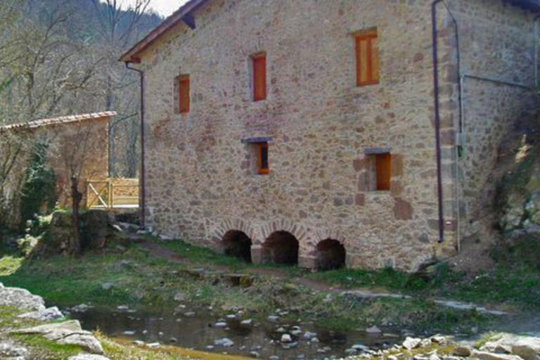

Visita · Sant Joan
A més de conèixer el funcionament d'aquests molins fariners , en aquest ecomuseu es troba el Centre d'Educació ambiental Alt ter on trobareu una amplia propost de tallers, itineraris i tot el…